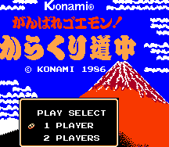

Ganbare Goemon - Nintendo Games

Controls
- A button: Jump
- B button: Attack
- Start: Pause
- Select: [not used]
Jumping over pots and rocks releases power-up items. There are also geisha girls that run around occasionally;
catching one gives you bonus points.
Anime Video Game Resource Center © 1998 by Luis A. Cruz